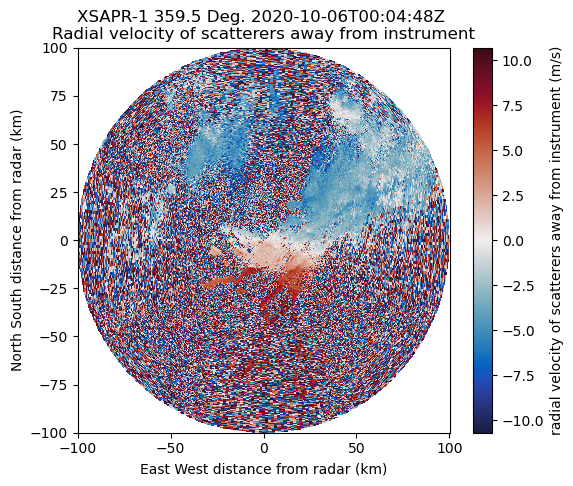
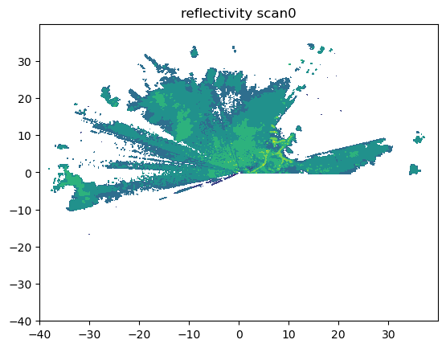
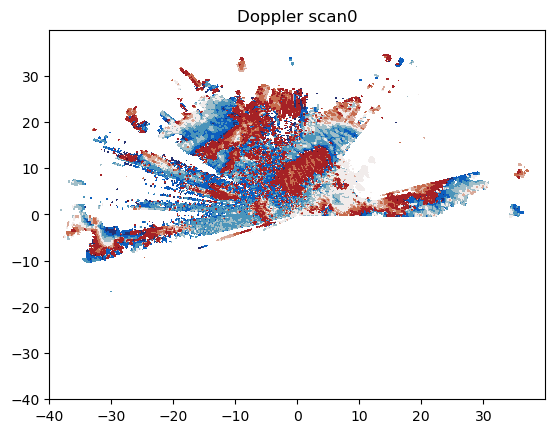
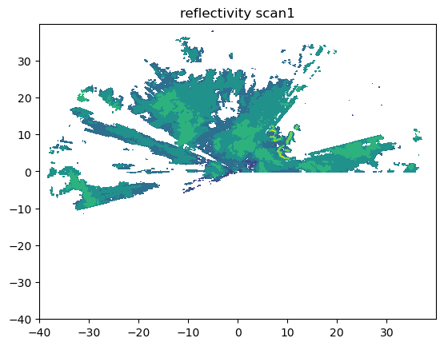
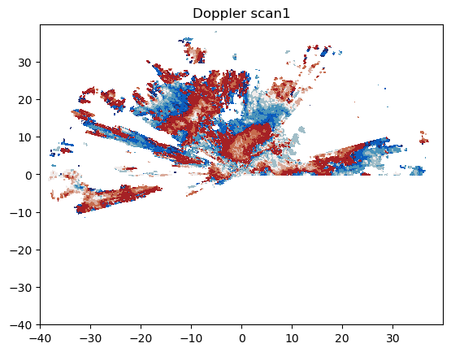
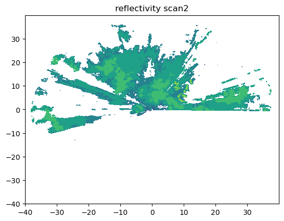
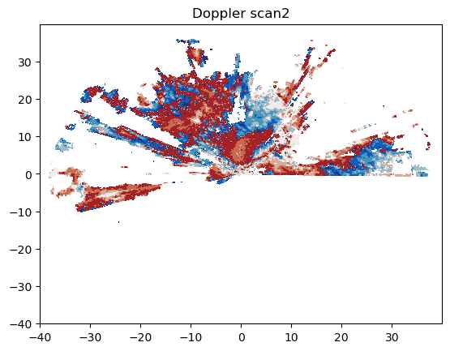
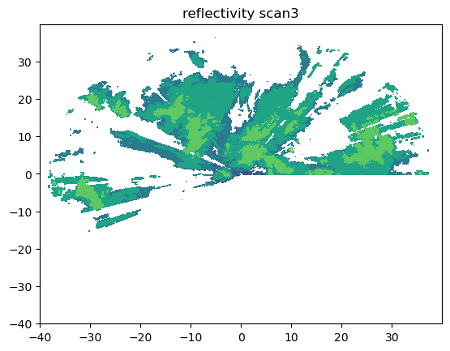
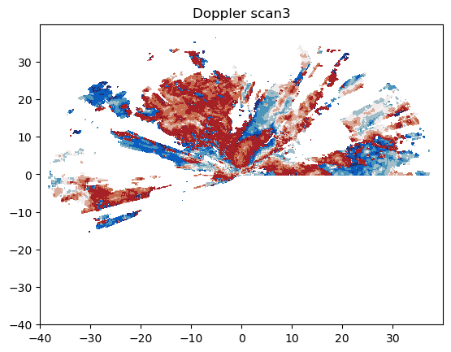

This notebook is a playbook and was not included in analysis.
import act
import numpy as np
import xarray as xr
from matplotlib import pyplot as plt, dates
from datetime import datetime,time,timedelta
import pyart
import os
import warnings
warnings.filterwarnings('ignore')
# Set your username and token here!
username = 'hseppala'
token = '2a895b89c1ac6335'
# Set the datastream and start/enddates
datastream = 'nsaxsaprcfrppiC1.a1'
startdate = '2020-10-06'
enddate = '2020-10-06'
# Use ACT to easily download the data. Watch for the data citation! Show some support
# for ARM's instrument experts and cite their data if you use it in a publication
result = act.discovery.download_arm_data(username, token, datastream, startdate, enddate)
[DOWNLOADING] nsaxsaprcfrppiC1.a1.20201006.000448.nc
[DOWNLOADING] nsaxsaprcfrppiC1.a1.20201006.000659.nc
If you use these data to prepare a publication, please cite:
Feng, Y.-C., Lindenmaier, I., Nelson, D., Matthews, A., Wendler, T., Melo de
Castro, V., & Rocque, M. X-Band Scanning ARM Precipitation Radar (XSAPRCFRPPI).
Atmospheric Radiation Measurement (ARM) User Facility.
https://doi.org/10.5439/1970125
radar = pyart.io.read(result[0])
radar
<pyart.core.radar.Radar at 0x7fe9868ff590>
list(radar.fields)
['attenuation_corrected_differential_reflectivity',
'attenuation_corrected_reflectivity_h',
'cross_correlation_ratio_hv',
'differential_phase',
'differential_reflectivity',
'mean_doppler_velocity',
'normalized_coherent_power',
'radar_echo_classification',
'reflectivity',
'reflectivity_enhanced',
'reflectivity_v',
'signal_to_noise_ratio',
'specific_differential_phase',
'spectral_width',
'total_power',
'total_power_enhanced',
'total_power_v']
fig = plt.figure(figsize=[6,5])
display = pyart.graph.RadarDisplay(radar)
display.plot_ppi('mean_doppler_velocity',cmap='pyart_balance')

datastream = 'anxkasacrgridppiM1.c1'
startdate = '2020-03-13T12:00:00'
enddate = '2020-03-13T13:00:00'
# Use ACT to easily download the data. Watch for the data citation! Show some support
# for ARM's instrument experts and cite their data if you use it in a publication
result_anx = act.discovery.download_arm_data(username, token, datastream, startdate, enddate)
[DOWNLOADING] anxkasacrgridppiM1.c1.20200313.120051.nc
[DOWNLOADING] anxkasacrgridppiM1.c1.20200313.123051.nc
[DOWNLOADING] anxkasacrgridppiM1.c1.20200313.121551.nc
[DOWNLOADING] anxkasacrgridppiM1.c1.20200313.124551.nc
If you use these data to prepare a publication, please cite:
Wang, M., Giangrande, S., & Johnson, K. Ka-Band Scanning ARM Cloud Radar PPI
scan, Cartesian Cloud Cover Grid VAP (KASACRGRIDPPI). Atmospheric Radiation
Measurement (ARM) User Facility. https://doi.org/10.5439/1886546
ds = xr.open_mfdataset(result_anx[0])
ds
<xarray.Dataset> Size: 328MB
Dimensions: (time: 4, bound: 2, Y: 1600, X: 1600,
frequency: 1)
Coordinates:
* time (time) datetime64[ns] 32B 2020-03-13T...
* Y (Y) float32 6kB -4e+04 ... 3.995e+04
* X (X) float32 6kB -4e+04 ... 3.995e+04
* frequency (frequency) float32 4B 3.529e+10
Dimensions without coordinates: bound
Data variables: (12/15)
base_time datetime64[ns] 8B ...
time_offset (time) datetime64[ns] 32B dask.array<chunksize=(4,), meta=np.ndarray>
time_bounds (time, bound) datetime64[ns] 64B dask.array<chunksize=(4, 2), meta=np.ndarray>
co_to_crosspol_correlation_coeff (time, Y, X) float32 41MB dask.array<chunksize=(1, 800, 1600), meta=np.ndarray>
crosspolar_differential_phase (time, Y, X) float32 41MB dask.array<chunksize=(1, 800, 1600), meta=np.ndarray>
linear_depolarization_ratio_v (time, Y, X) float32 41MB dask.array<chunksize=(1, 800, 1600), meta=np.ndarray>
... ...
signal_to_noise_ratio_crosspolar_v (time, Y, X) float32 41MB dask.array<chunksize=(1, 800, 1600), meta=np.ndarray>
spectral_width (time, Y, X) float32 41MB dask.array<chunksize=(1, 800, 1600), meta=np.ndarray>
fixed_angle (time) float32 16B dask.array<chunksize=(4,), meta=np.ndarray>
lat float32 4B ...
lon float32 4B ...
alt float32 4B ...
Attributes: (12/16)
command_line: kasacrgridppi -s anx -f M1 -b 20200313 -D 1 -N -n ...
Conventions: ARM-1.3 CF/Radial-1.4 instrument_parameters radar_...
process_version: vap-kasacrgridppi-0.0-0.dev0.dirty.el7
dod_version: kasacrgridppi-c1-1.0
input_datastreams: anxkasacrcfrcorppivM1.c1 : 0.0 : 20200313.120009
site_id: anx
... ...
datastream: anxkasacrgridppiM1.c1
doi: 10.5439/1886546
number_of_sweeps: 4
nyquist_velocity: 8.014256
radar_beam_width_h: 0.314
history: created by user mwang on machine node3-dev.adc.arm...for t in range(4):
r = np.array(ds.reflectivity[t,:,:])
d = np.array(ds.mean_doppler_velocity[t,:,:])
x = np.array(ds.X)/1000
y = np.array(ds.Y)/1000
plt.contourf(x,y,r)
plt.title('reflectivity scan'+str(t))
plt.show()
plt.contourf(x,y,d,cmap='pyart_balance')
plt.title('Doppler scan'+str(t))
plt.show()







